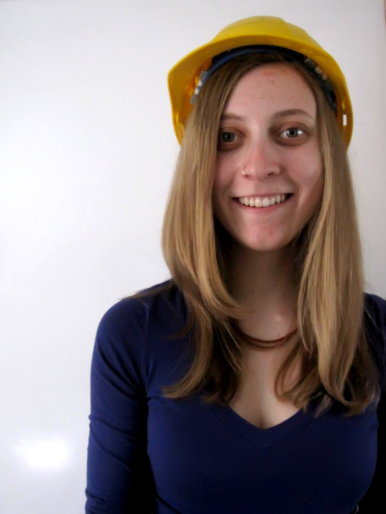
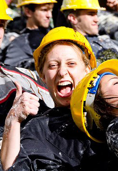

-

Emily Procher as VP Internal
If I am chosen to represent you as VP Internal, I will strive for awesome-ness in all of my responsibilities:
A Hardcore Handbook
- I promise to ensure the first taste of engineering that next year’s 101ers get will be EPIC. They will hold all of our best traditions and advice in the palm of their hands.
Eng Merch
- Jackets, sweaters, t-shirts, and all sorts of other engineering merch will be available, affordable, bilingual, and of course, as amazing as the engineers wearing them.
- Specifically, I will be trying to bring in more uOttawa “eng swag”, crucial for trading when all of the universities get the engineers together.
ERTW
- I will work to maintain all the great deals on the ERTW sticker, as well as expand further to popular businesses throughout Ottawa. After all, engineers rule the world!
Clubs, Sports, and Fun Stuff
- I will help raise awareness of events held by all your sub-associations and engineering clubs, so you don’t miss out on all the cool stuff they do for you.
- Eng Rugby and Eng Hockey, our two drinking teams with sports problems will of course still be going strong.
-

Hey Engineers!
I’m Emily, and I was born and raised in the small town of Bradford, Ontario. I’m a first year Biomed Mechanical Engineering student here at uOttawa.
Since my first day here, I have tried to get involved as much as possible in all the great things our school has to offer. I captained teams for both the MESS vs. SSA Rube Goldberg design competition and the uOttawa Engineering Competition (Junior Design). I’ve volunteered for the MESS fundraisers and events, and also helped out on our very own concrete toboggan team. During winter challenge a few amazing engineers and I built a fabulous ice bar for everyone to enjoy, and a giant snow fort for Guerre des Tuques. Over reading week, a bunch of us also created uOttawa’s part in the giant Rube Goldberg machine put together by engineering students across Ontario.
On a more political side, I am currently a class representative for first year engineers on the ESS. I have also attended two conferences: the National Conference for Women in Engineering, and the First Year Integration Conference.
In my spare time, I like to run, swim, bike, and generally be active and outside. I’m also a new member on uOttawa’s fencing team. My newest sports discovery is bouldering, which I love!
I look forward to getting to know you over the course of this week, and I sincerely hope that you go out and vote on March 19th or 20th. I’d be honoured to have your vote to represent you as your VP of Internal Affairs.
Any questions, concerns, or comments (relevant or otherwise), feel free to email me at emily@voteproch.info!
-
Salut les ingénieurs!
Je m’appelle Emily et j’ai été élevée dans la petite ville de Bradford en Ontario. Je termine ma première année dans la programme de génie Mécanique Biomédical.
Depuis le début de l’année scolaire je me suis intégrée le plus possible dans les activitées que nos associations offront. J’ ai mené les équipes pour chacune des competitions de design MESS vs.SSA Rube Goldberg ainsi que celles de la compétition uOttawa. J’ai eu l’occasion de participer dans plusieurs levées de fonds organisées par MESS ainsi qu’avec l’équipe de toboggan en béton en tant que bénévole. De plus, durant l’hiver, mes amis et moi nous avons construit un bar en glace ainsi qu’un fort de neige gigantesque pour la Guerre Des Tuques. Enfin, durant la semaine de relâche, plusieurs d’entre nous avons participé dans la compétition d’assemblage de machine Rube Goldberg.
D’un côté plus politique, je suis présentement une représentatrice de classe pour étudiants de première année en genie de l’ESS. J’ai aussi assisté à la conference pour les femmes en ingénierie ainsi que celle d’Intégration pour Premières Années.
Dans mon temps libre, j’aime courir, nager, faire du vélo et en gros être à l’extérieur. Récemment je suis devenue un nouveau member de l’équipe d’escrime de l’université. Et en fin de note, ma découverte sportive la plus nouvelle est l’escalade! Que j’adore!
J’espère bien vous rencontrer durant les semaines qui suivent et que vos votes seront nombreux le 19 et 20 mars! Ce serait mon honeur de vous représenter en tant que VP des affaires intérieures.
Envoyez moi un courriel vous avez des questions ou commentaires que vous aimeriez m’addresser, au: emily@voteproch.info
-
Emily Procher comme VP aux Affaires Internes
Si je suis élue pour vous représenter en tant que VP aux Affaires Internes, je m'efforcerai d’être génial dans toutes mes responsabilités:
Un Manuel Magnifique
- Je vous promets de m’assurer que l’initialisation au génie que recevront les 101ers de l'année prochaine sera ÉPIQUE. Le manuel leur offrira une vue d’ensemble de toutes nos meilleures traditions et des conseils qui leurs seront dès lors disponible.
Eng Merch
- Manteaux, chandails, t-shirts, et toutes autres sortes de marchandises seront disponibles, abordables, bilingues, et bien sûr, aussi incroyables que les ingénieurs qui les portent.
- Plus précisément, je vais essayer d'apporter plus de marchandise d'uOttawa « eng swag », qui est à mon avis indispensable pour l’échange lorsque les ingénieurs de diverses universités se rencontrent.
ERTW
- Je m’assurerai de maintenir toutes offres de l’association ERTW, ainsi que de développer celles-ci d’avantage auprès des entreprises populaires d’Ottawa. Après tout, les ingénieurs gouvernent le monde!
Clubs, Sports, et Autre Divertissements
- Je m’assurerai que les évènements créées par nos associations d’ingénieurs se feront communiquer parmis tous pour que tout le monde puisse en profiter et pour renforcer notre communauté d’ingénieurs.
- EngRugby et EngHockey, nos équipes de bar ayant des problèmes de sport, seront bien sûr aussi actives qu’avant.